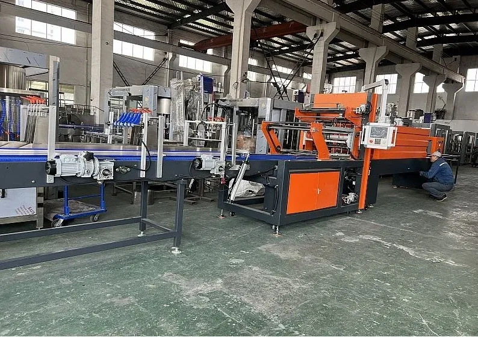
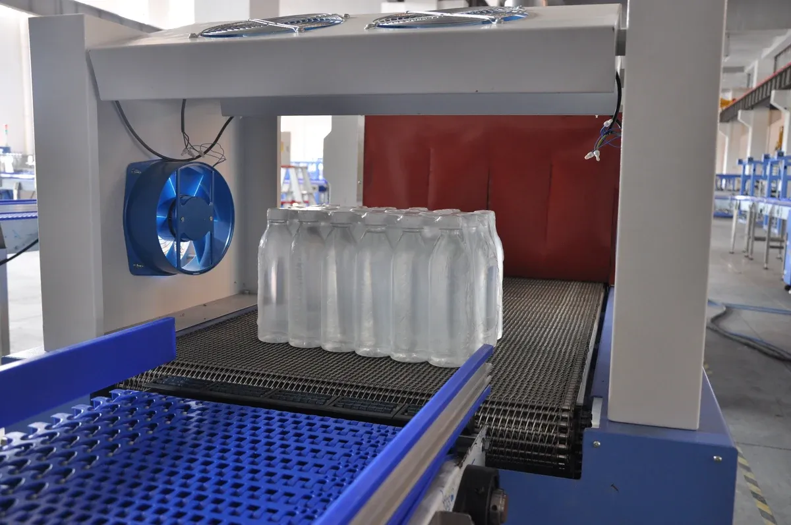
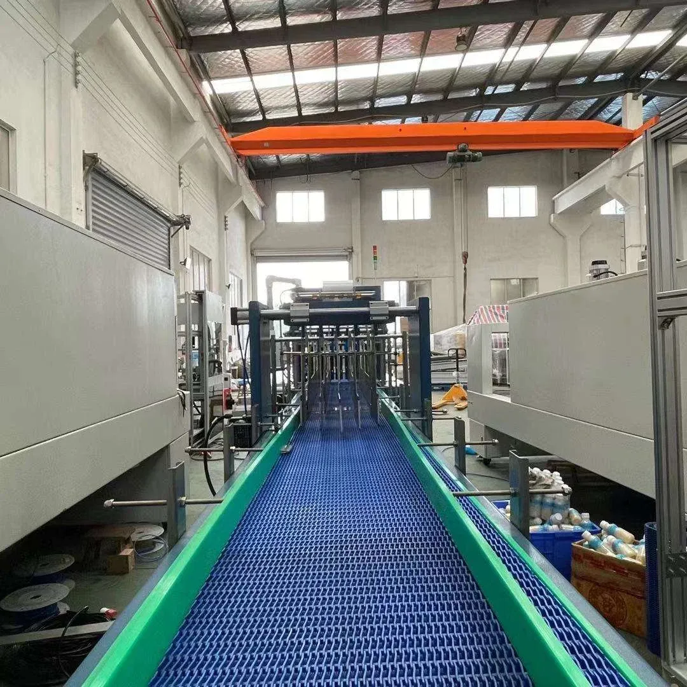
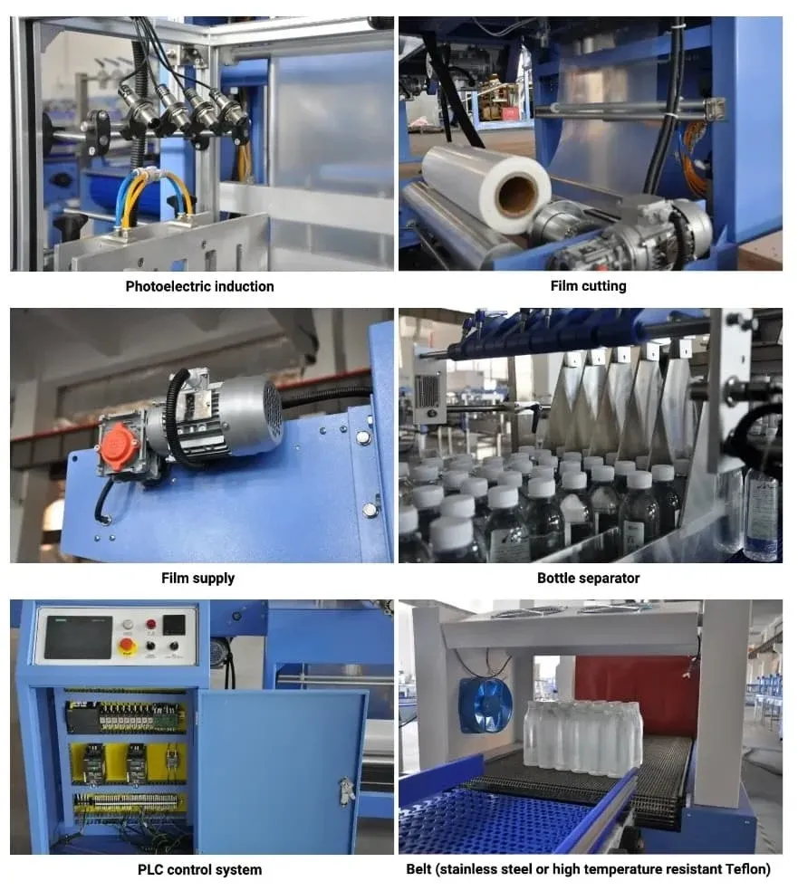
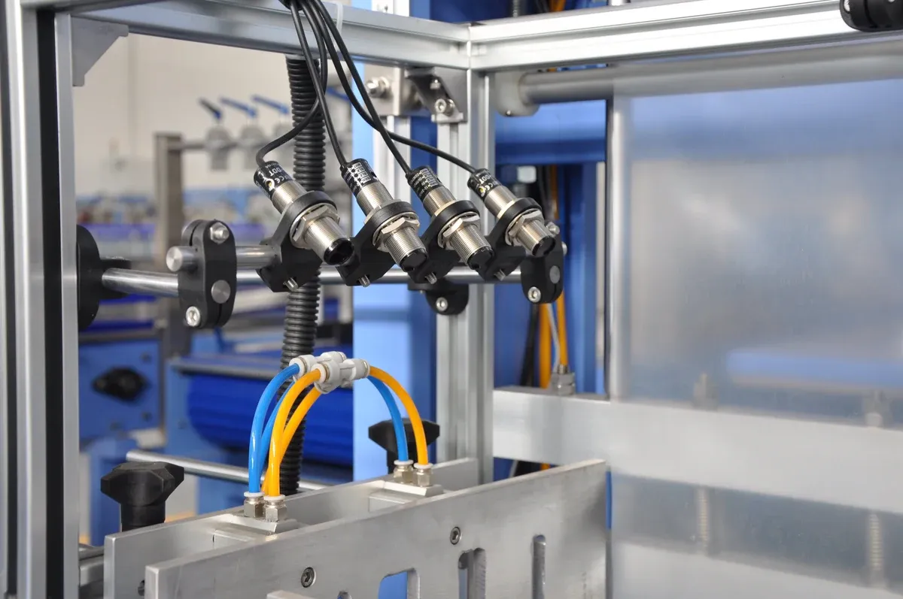

01
No Bottom Tray Needed
Packs pop-top cans, mineral water, bottles, beer and drinks without a bottom tray.
PMB-08 automatic L-type PE film shrink wrapping machine for bottles, cans, beer and beverage multipacks.
PMB-08
The PMB-08 is an automatic shrink packing machine for pop-top cans, mineral water, bottles, beer, drinks and other products without a bottom tray. Working with a PE film shrink tunnel, it packs the goods perfectly in one continuous automatic process.
The whole production process adopts advanced German technology, and the main parts are imported from international famous companies. Capacity is stable and the machine is built for long-time use, with seven actuating motors working together to form multi-bottle packs in plastic film.

Packs pop-top cans, mineral water, bottles, beer and drinks without a bottom tray.
Bottle transfer and arranging, film packing, sealing and cutting, shrinking, cooling and shaping in one automatic line.
The PE film shrink tunnel packs the goods perfectly with a tight, secure wrap.
Stable capacity and long-time use, with seven actuating motors working together.
Easy change of packaging combination and bottle type to integrate multi-function into one machine.
PMB-08
The PMB-08 is specially designed for the packaging production lines of beer, beverage, pure water, fruit juice, dairy products and more. The L-type sealer wraps bottles and cans in PE film, and the heat tunnel shrinks the film tight around each multipack.
Change the packaging combination and bottle type easily — one machine covers 2×3, 3×4, 3×5 and 4×6 multipacks for bottles and cans without a bottom tray.

Beer bottles and cans in sealed multipacks.
Carbonated and still drinks in PE film multipacks.
Mineral water and pure water bottles in portion multipacks.
Fruit juice bottles in sealed multipacks.
Dairy product bottles and containers in film multipacks.
6 bottles or cans per pack.
12 bottles or cans per pack.
15 bottles or cans per pack.
24 bottles or cans per pack.
Specially designed for packaging production lines of beer, beverage, pure water, fruit juice, dairy products and more.
Full automatic functions of bottle transfer and arranging, film packing, sealing and cutting, shrinking, cooling and shaping.
Advanced constant-temperature film heat-sealing technology with a clear and secure seal.
The quick seal cooling structure keeps the seal strong even under continuous production.
PLC automatic program circulation control with stable and reliable performance.
The original imported guide-bar cylinder guarantees correct operation and durability.
An inductive switch controls the film transfer system to reliably adjust the film transfer length with less loss.
All transfer systems are controlled by frequency-changing (VFD) devices, with stable and smooth transfer speed.
A unique thermal passage with 2 sets of centrifugal hot-air circulation for equal heat distribution and a beautiful, secure shrinkage effect.
3 layers of heat insulation treatment with good insulating properties, quick temperature rise and energy saving.
The enhanced cooling shaping passage quickly turns the packaging film into a high-strength state that is convenient to store and transport.
Easy change of packaging combination and bottle type to integrate multi-function into one machine.
PMB-08
Bottles or cans are transferred and arranged into groups, wrapped in PE film, sealed and cut by the L-type sealer, then passed through the heat tunnel where the film shrinks tight. A cooling passage sets the film for storage and transport.
The whole sequence runs automatically under PLC control, from infeed to finished multipack discharge.

Bottles or cans are transferred and arranged into groups.
Each group is wrapped in PE film.
The L-type sealer seals and cuts the film at 160–180°C.
The heat tunnel shrinks the film tight around the multipack.
The cooling passage sets the film quickly.
Cooled multipacks come out shaped and ready for storage and transport.
PMB-08
The L-type sealer combines photoelectric induction, film supply, film cutting and a bottle separator with PLC control. The heat-resistant belt carries packs through the tunnel.
Each station is labeled on the machine diagram: photoelectric induction, film cutting, film supply, bottle separator, PLC control system and the stainless steel or high-temperature resistant Teflon belt.

Detects bottles and controls the sealing cycle.
Feeds PE film to the sealing station.
Cuts the film to the pack length.
Separates and spaces bottles into groups.
Controls the sealing, cutting and transfer sequence.
PMB-08
The shrink tunnel uses 2 sets of centrifugal hot-air circulation for equal heat distribution, so the film shrinks evenly around every pack.
3 layers of heat insulation keep the heat in, raise the temperature quickly and save energy. The enhanced cooling shaping passage then sets the film into a high-strength state.

2 sets of centrifugal hot-air circulation for equal heat distribution.
Beautiful and secure shrinkage effect on every pack.
Good insulating properties with quick temperature rise.
Insulation and quick temperature rise save energy.
Quickly turns the film into a high-strength state for storage and transport.
Watch the PMB-08 wrap bottles and cans in PE film and shrink the multipacks in the heat tunnel.
Buyer questions
Tell us your bottle or can size and the multipack format you need — we will confirm the configuration for your production line.